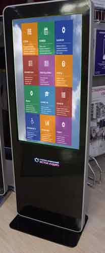
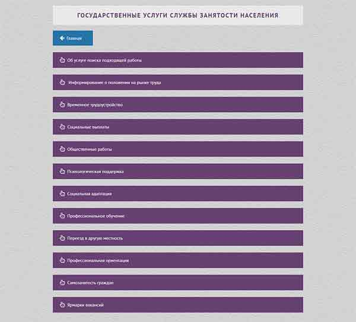
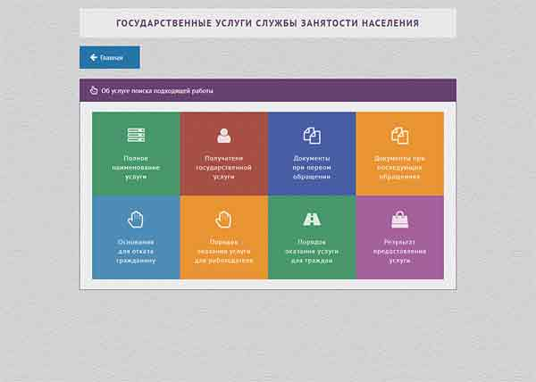

Проект - Центр занятости населения
Проект Центр занятости населения - это сайт с фиксированным по размеру дизайном для информационного терминала центра занятости. В задачи сайта входит информирование посетителей центра об услугах государственной службы, действующим законодательством в данной сфере, графиком и услуовиями работы учреждения, информационная поддержка граждан зарегистрированных в качестве безработных и т.д.
Сайт Центр занятости населения может быть исользован для наполнения любым содержимым (как текстом, так и иллюстрациями) на различную тематику. Блоковая система сожержимого позволяет добовлять, перемещать или удалять любые части web-страниц.
Демо сайта


